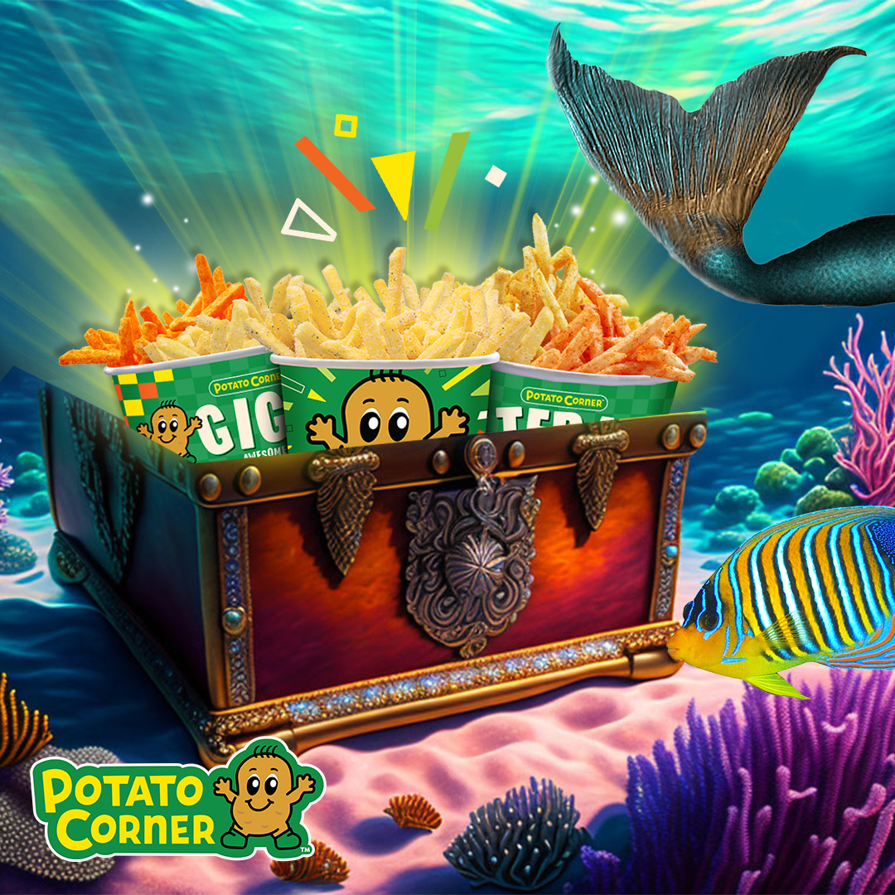
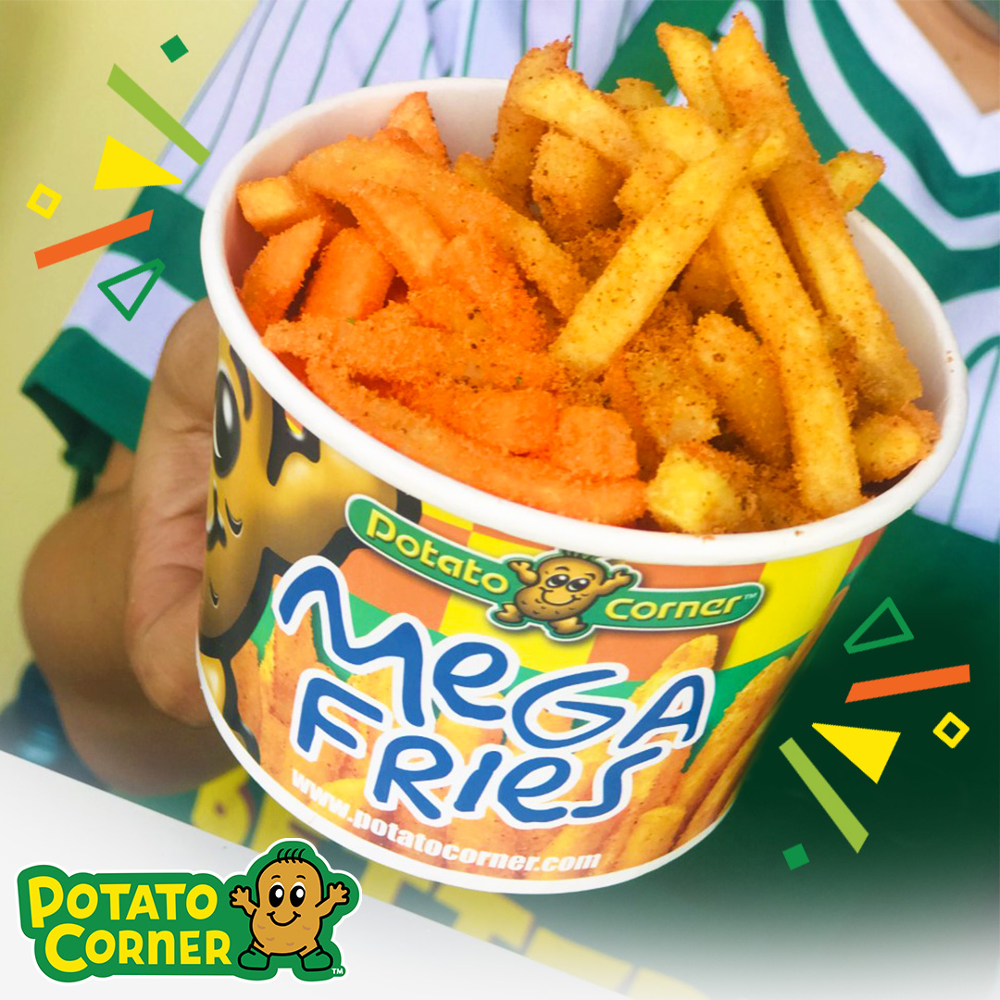
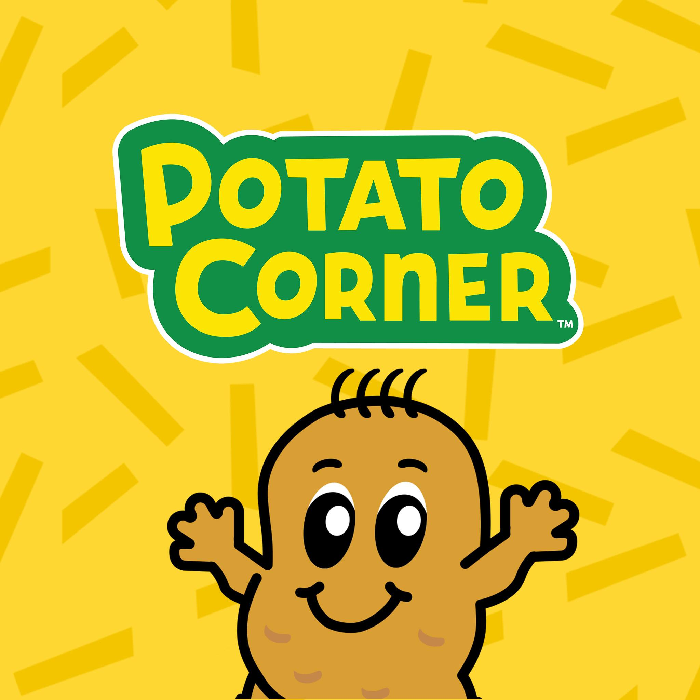
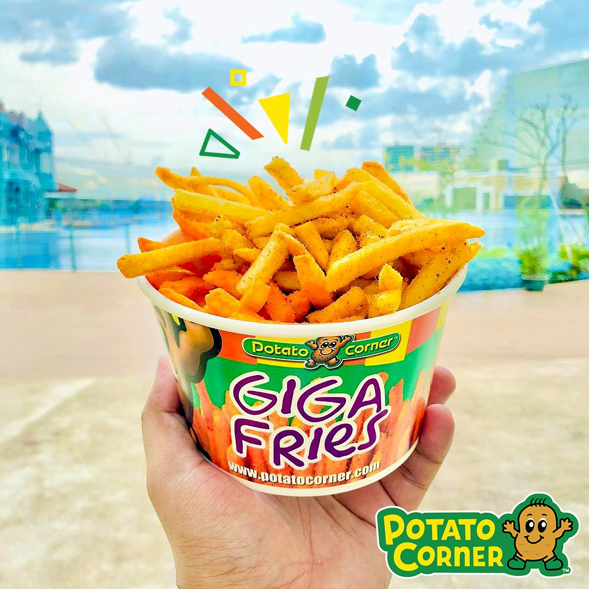
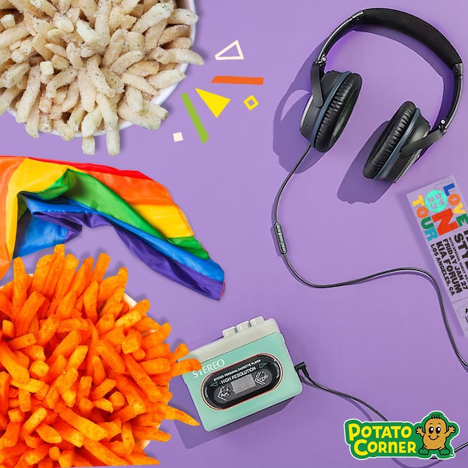
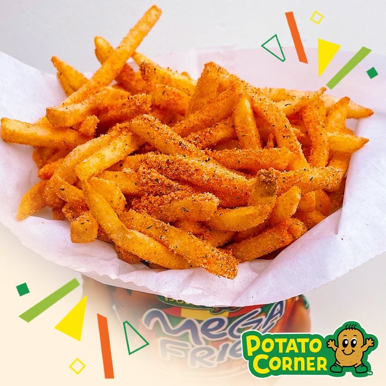
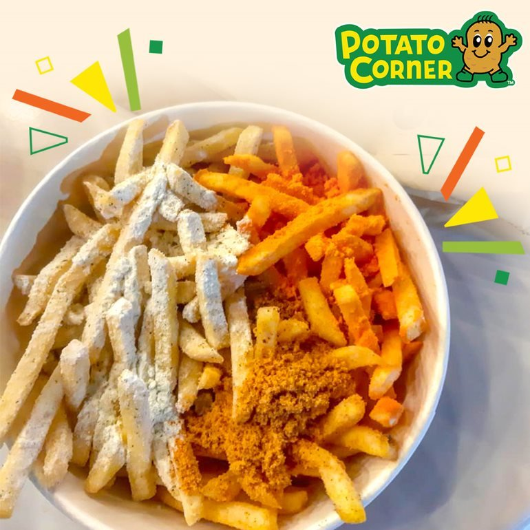
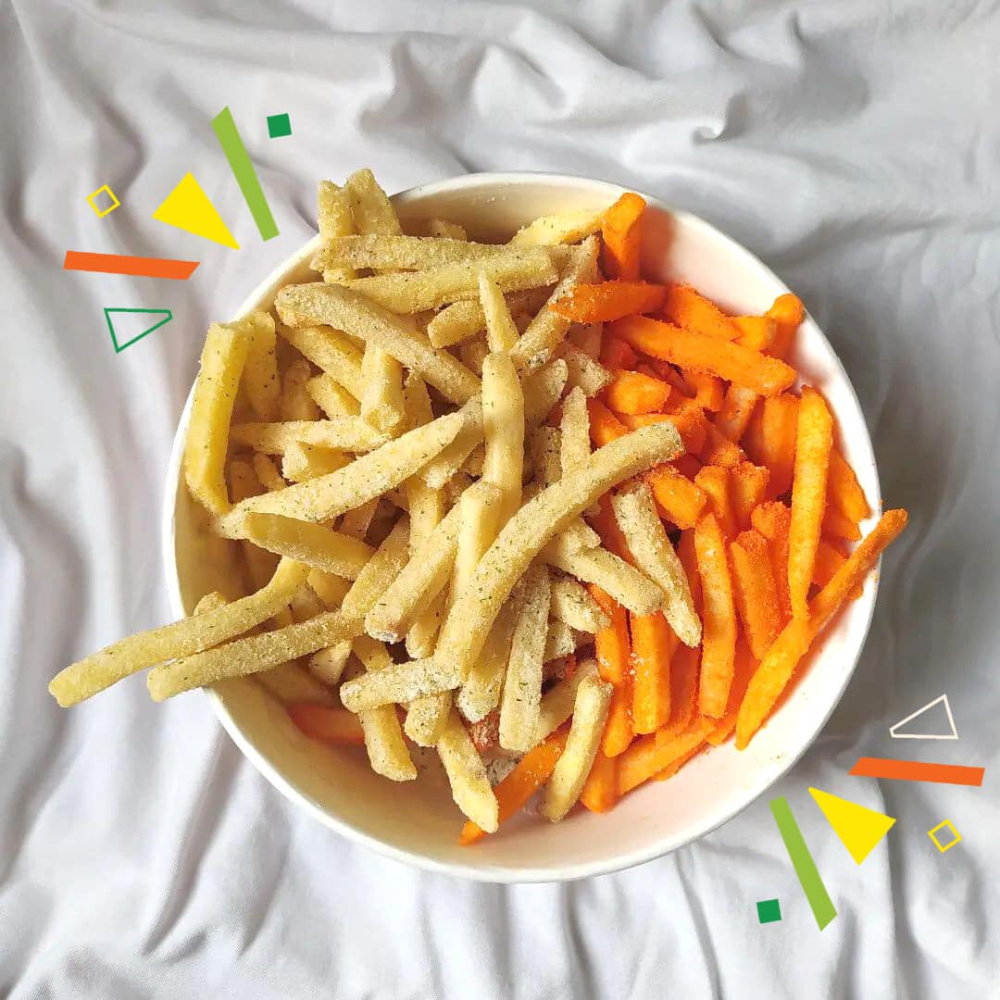
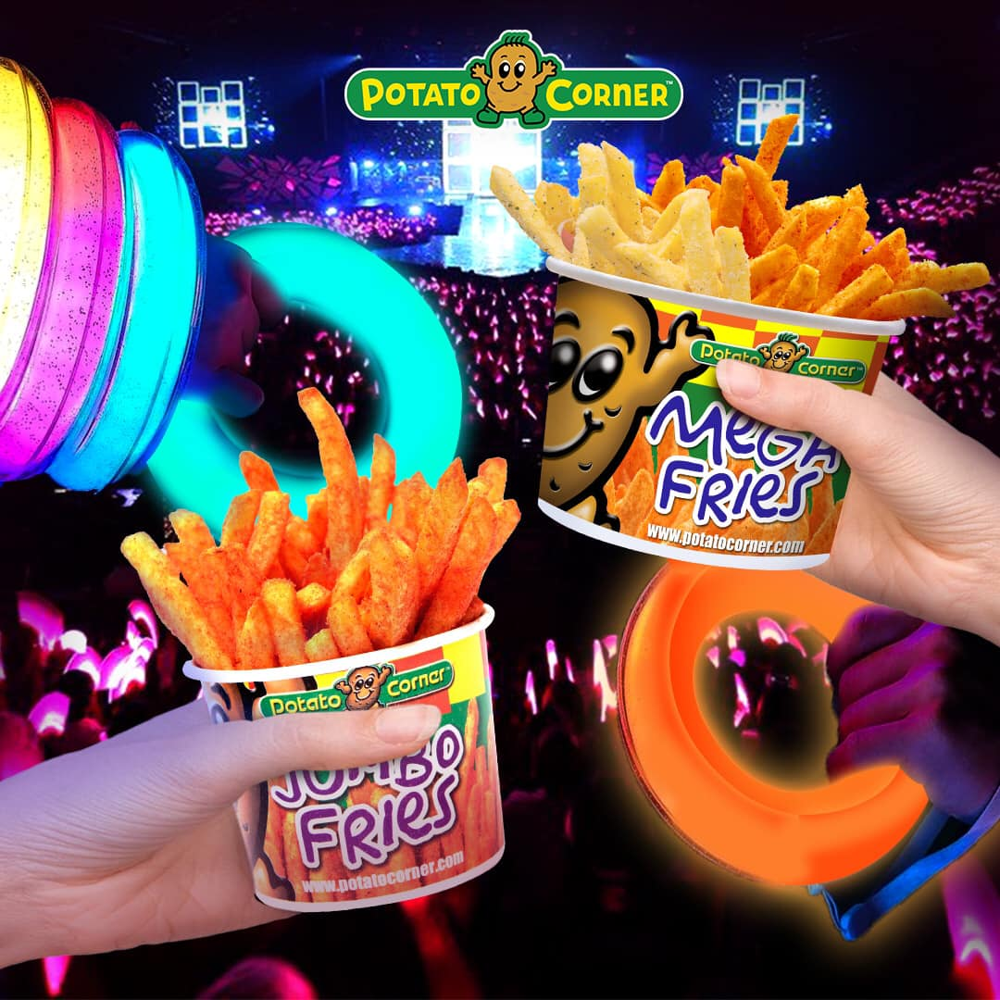

In a thrilling culinary development, Potato Corner, the renowned global franchise known for its mouthwatering array of flavored fries, has unveiled its highly anticipated new website. This innovative digital platform promises to take potato lovers on an exhilarating journey, exploring a world of delectable flavors and crispy delights. With its sleek design and user-friendly interface, the Potato Corner website invites visitors to dive into an enticing menu of gourmet fries, ranging from classic favorites to bold and exotic tastes from around the globe. Unleashing a tantalizing combination of crunch and flavor, Potato Corner's website is set to become the ultimate destination for fry enthusiasts everywhere. Stay tuned as we bring you the latest updates on this exciting potato revolution!

Potato Corner, the renowned global snack chain, has taken a digital leap by launching its innovative website, promising a delectable journey for all snack aficionados.

Prepare your taste buds for an explosion of flavor as Potato Corner introduces its dynamic new website, allowing snack lovers to conveniently order their favorite crispy treats online.

Potato Corner has embraced the digital era with the launch of its cutting-edge website, offering customers a seamless and interactive way to explore their mouthwatering menu.

Calling all snack enthusiasts! Potato Corner's captivating new website has arrived, delivering a captivating visual experience and simplified online ordering to satisfy your snack cravings.

Potato Corner's brand-new website has officially launched, bringing its tantalizing range of seasoned fries and snacks directly to your doorstep with just a few clicks.

Potato Corner has revolutionized the way we enjoy snacks with the launch of its immersive website, featuring an extensive menu and user-friendly interface that will leave you craving more.

Step into the future of snacking as Potato Corner unveils its sleek new website, blending convenience and flavor to provide an unparalleled online snacking experience.

Potato Corner has embraced the digital realm with its brand-new website, allowing snack enthusiasts to explore a variety of savory offerings and place orders effortlessly.

Get ready for a flavor-packed adventure as Potato Corner launches its vibrant new website, inviting snack enthusiasts worldwide to discover a diverse array of mouthwatering delights.
0917-714-2083
potatocorner@gmail.com
All over the Philippines.